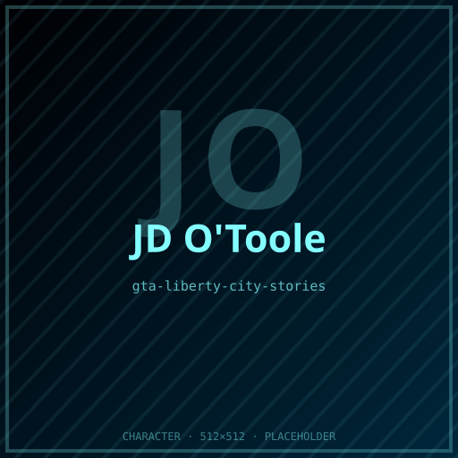

LCS · Character
JD O'Toole
A pimp and police informant who drags Toni into Triad and Sindacco trouble.

- role
- Pimp, informant
- affiliations
- Leone Crime Family, Sindacco Family
- status
- Deceased
Verified record
LCS · Character
A pimp and police informant who drags Toni into Triad and Sindacco trouble.

Verified record